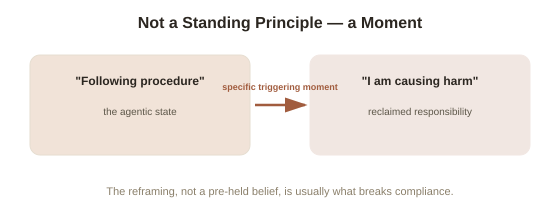

Chapter 4: Whistleblowers and Resisters — What Predicts Disobedience
Chapter 3 mapped the situational levers that shift obedience rates on average — but averages leave a real, important question unanswered: even in the exact same high-pressure condition, some people refused and most didn't. Roughly a third of Milgram's original participants stopped before the maximum shock, under identical instructions, identical authority, identical setup. What actually separated them from the two-thirds who continued has become its own significant area of research, extending well past Milgram's original data.
It usually wasn't a moral principle stated in advance
A striking, consistent finding across records of Milgram-style refusals is that resistance rarely started from an abstract, pre-formed moral stance ("I don't believe in harming people, full stop"). It far more often began at a specific, concrete moment — a particular cry of pain from the "learner," a specific escalation in the shock label's wording, a personal doubt that broke through at one identifiable instant — after which the person's framing of the entire situation shifted, sometimes quite suddenly, from "following the required procedure" back to "actively harming another person." This matters because it suggests resistance isn't purely a fixed character trait some people simply have and others lack — it's frequently a specific moment of reframing, which means the conditions that make that moment more or less likely to arrive (exactly the levers Chapter 3 identified: proximity, peer models, distance from authority) have real, practical power to shift outcomes, independent of anyone's underlying values.
What research on real whistleblowers adds
Studies of real-world whistleblowers — people who reported serious wrongdoing inside organizations, often at real personal and professional cost — find a recurring pattern that echoes Milgram's data directly: whistleblowers disproportionately report a specific triggering incident, rather than a slow accumulation of general awareness, as the moment they decided to act, even when the underlying wrongdoing had been going on, and had been known to them in some form, for a long time before. Organizational psychology research also finds that whistleblowers are more likely to act when they have at least one ally or confidant who shares their concern — a direct, real-world echo of both Asch's single dissenter and Milgram's peer-refusal variation from Chapters 2 and 3. Isolation, by contrast, is one of the most consistently identified factors suppressing disclosure, even among people who privately recognize wrongdoing clearly.

Situational support matters more than personality tests predict
Researchers have tried, with limited success, to identify a stable "resister personality" — a fixed set of traits that reliably predicts who will refuse unethical instructions across different situations. The results have been consistently weaker than intuition suggests: personality measures explain only a modest share of the variance in who resists, while situational factors — Chapter 3's proximity and peer-model manipulations — produce far larger, more consistent shifts in behavior across a wide range of different people. This doesn't mean individual character is irrelevant, but it does mean the popular assumption that resisters are simply a different, braver kind of person, and compliers a weaker kind, isn't well supported by the actual data — the situation itself carries more predictive weight than most people intuitively assign to it, a finding that runs through this entire topic starting with Chapter 1's original point about the ordinariness of Milgram's participants.
The practical upshot: resistance can be built, not just found
Taken together, these findings support a genuinely actionable conclusion, distinct from simply hoping to personally be the "type" who'd resist: since a specific triggering moment and the presence of even one ally are such consistently powerful factors, deliberately building conditions that make both more likely — voicing early doubts out loud rather than privately, actively looking for and supporting a lone dissenter rather than waiting to see if others will, and treating a first uneasy instinct as worth naming rather than suppressing — are concrete, evidence-backed ways to shift the odds of resistance, both for yourself and for people around you, rather than simply trusting that good character will show up automatically when it's needed.
Try this
Ideas for noticing or testing this in your own life.
- Think of a time you had an early, uneasy instinct about something you later went along with anyway — try to identify the specific moment the discomfort arrived, and what happened between that moment and your eventual decision.
- Practice being someone's "single ally": next time you notice a colleague or friend voicing a quiet, isolated doubt about something happening around you both, back them up early and visibly rather than waiting to see how others react first.
Worth pulling on?
A few loose threads from this chapter — if any of these genuinely grab you, that's a good sign of where to go next.
- Studies like Milgram's and Zimbardo's, which this topic has covered in real detail, directly reshaped the ethical rules governing all psychological research that followed them. → The subject of the final chapter in this topic: how these studies changed research ethics.
- The finding that situational factors outpredict personality traits for resistance closely parallels a similar debate in a different area of psychology entirely. → Already in the library: Personality (The Big Five) covers what personality traits do and don't reliably predict.